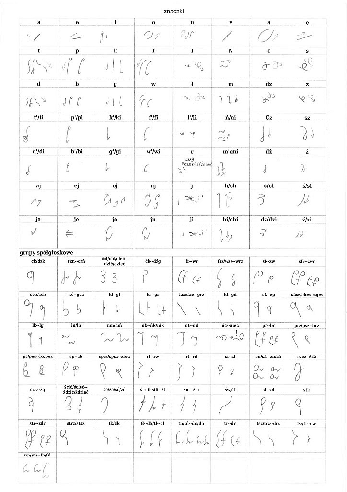
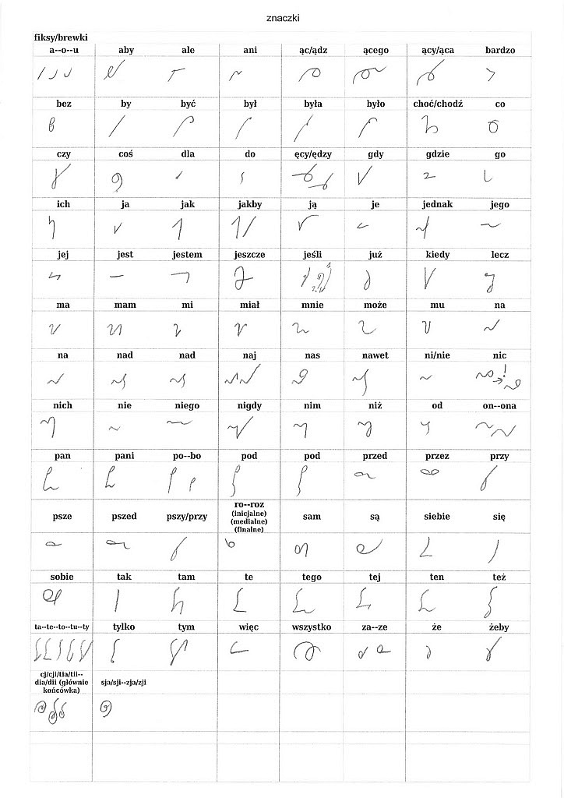
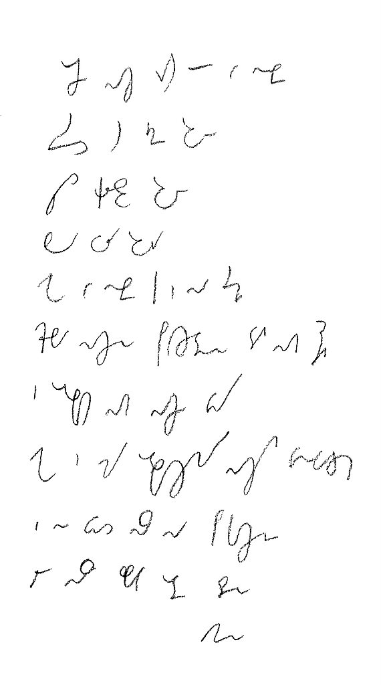
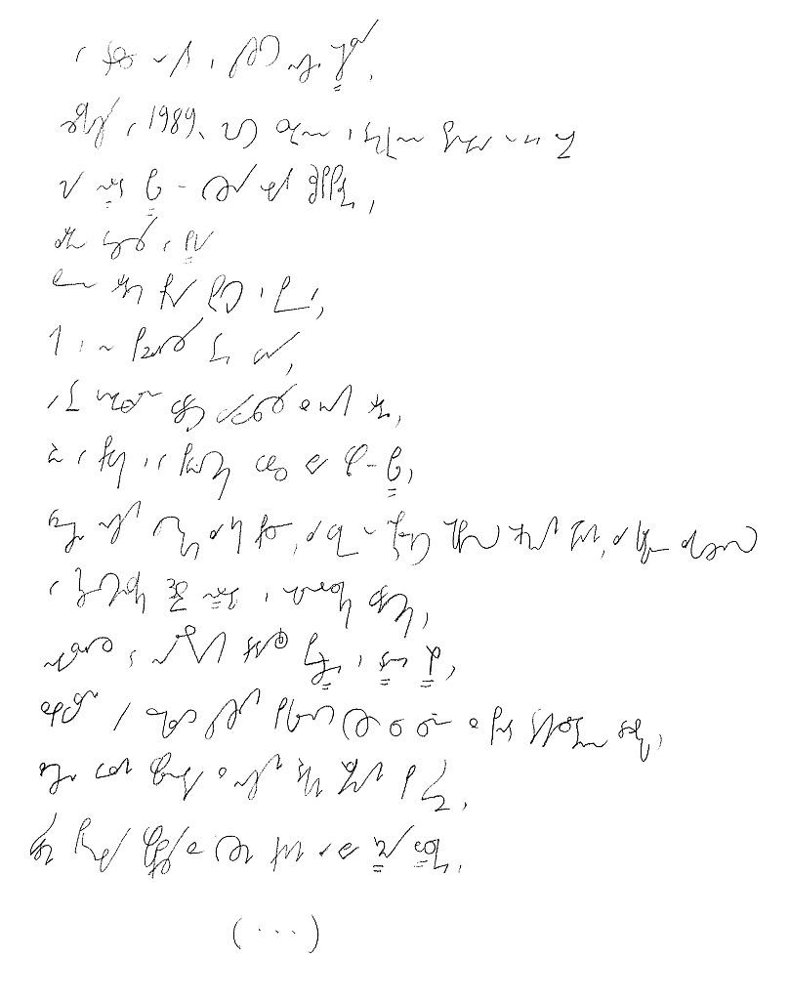

International
InternationalStemi - podgląd
2011-06-09 | autor: flamenco108Tak się rozpisałem na temat SteMi, że teraz nie mogę się podnieść spod zwału maili wzywających mnie jednogłośnie do uchylenia choć rąbka tajemnicy, jak też ten system aktualnie wygląda. A wygląda z grubsza tak:

System ma służyć współczesnym, czyli nie uwzględnia np. tzw. cieniowania, wszystkie znaki polegają na jednej grubości linii. Szukam prostych reguł, dzięki którym będzie można łatwiej zapamiętać te wężyki różne. Zatem podstawowy podział - na samogłoski i spółgłoski - polega na tym, że samogłoski pismo podnoszą, tj. pisane są w kierunku z dołu do góry, a spółgłoski pismo opuszczają, tj. pisane są w kierunku z góry do dołu. Reguła ta ma zastosowanie praktycznie bez wyjątków, chyba, że ktoś będzie się chciał sprzeczać o znaki, które dobrze się piszą poziomo, tj. w kierunku od lewej do prawej.
Można też zauważyć, że spółgłoski dźwięczne są małe i wyglądają tak samo, jak odpowiadające im spółgłoski bezdźwięczne.
W języku polskim mamy taką śmieszną grupę głosek, co to nie wiadomo, co z nimi robić: R, L, Ł. O ile niewiele zdołałem poradzić na L i Ł, to R pisze się na dwa sposoby: znaczkiem, jak na tablicy pokazano, ale znacznie częściej symbolizuje się je przez przekrzyżowanie znaków. Czyli np. słowo “warto” można napisać w-a-r-t-o, ale zupełnie nieźle da się to zrobić tak: w-a+t-o. Ręka mniej się przesunie z lewej na prawo, co ucieszy leworęcznych, a i na kartce więcej się zmieści. A na prędkość nie ma to raczej wpływu.
Trochę kłopotów sprawia też zmiękczanie L. Złożenie “li” występuje dość często, ale w aktualnym alfabecie nie ma to tak jaskrawego oznaczenia, jak zmiękczenia pozostałych spółgłosek. Zmiękczanie R, z powodu nasiąkania językiem angielskim teraz coraz częstsze, wciąż pozostaje tylko na prymitywnym poziomie zestawienia R-I.
Ponieważ system ma uwzględniać potrzeby ludzi leworęcznych, do których sam się zaliczam, a jednocześnie nie ma ambicji rozwijania kosmicznych prędkości, zatem dopuszcza się bezliniowość pisma, czyli “ucieczkę” pismem z linii pisania, hej w góry, lub hań w dół. To się może zdarzyć - i zdarzy się szczególnie podczas pisania wyrazów długich, wielosylabowych.
Podstawową metodą pisania systemem SteMi jest sylabizowanie. Pierwszym stopniem wtajemniczenia jest wprawne pisanie wszystkich sylab (fachowcy oceniają, że jest ich około 2000, więc niemało). To, czy wielosylabowy wyraz napiszemy w całości razem, czy też skleimy z dwóch, lub więcej, części, pozostaje kwestią drugorzędną. Czyli pisząc poszczególne słowa budujemy je z sylab, a nie liter: Ma-ło-pol-ska, Ma-zow-sze, Śląsk, pro-li-fe-ra-cja, a-ko-mo-da-cja, kon-stan-ty-no-poli-tań-czy-ko-wia-necz-ka. Metoda ta uzupełniona o pewną liczbę znaczników dla najczęściej używanych słów (zastanawiam się, ile ich powinno być, Angole całe systemy budują ze znaczników, czyli mają ich tysiące, ale wydaje mi się, że około dwustu by wystarczyło) powinno pozwolić pilnemu adeptowi potroić prędkość pisania w ciągu pół roku ćwiczeń.

Poniżej prezentuję dwie próbki tekstu. Sentymentalnie nawiązując do rzeszy poprzednich twórców systemów stenograficznych i składając im w ten sposób hołd, jako pierwszy przykład Modlitwa Pańska (czyli Ojcze Nasz), jako że jest to najczęściej używany tekst do pierwszej prezentacji systemu stenograficznego. W tym wypadku oczywiście jest napisany po polsku (taką mam nadzieję):

Drugi przykład to pierwsze słowa aktualnie (rok 2011) obowiązującej konstytucji, uchwalonej 2 kwietnia 1997 roku. Wybrałem ten tekst również z powodów sentymentalnych (jak wyżej, twórcy o nastawieniu ateistycznym zwykle cytowali jakiś akt prawny, np. konstytucję USA, zatem czemu nie?), bo przecież nie dydaktycznych - słowa użyte w preambule nie należą do grupy najczęściej używanych, czy to w mowie potocznej, czy to podczas wykładów uniwersyteckich.
Jednakowoż system mój projektowany jest z myślą, aby zdolen był zanotować wszystko, na prawach normalnego pisma długiego, zatem każdy przykład, im trudniejszy, tym lepszy, się nadaje.

W trosce o byt i przyszłość naszej Ojczyzny,
odzyskawszy w 1989 roku możliwość suwerennego i demokratycznego stanowienia o Jej losie,
my, Naród Polski - wszyscy obywatele Rzeczypospolitej,
zarówno wierzący w Boga
będącego źródłem prawdy, sprawiedliwości, dobra i piękna,
jak i nie podzielający tej wiary,
a te uniwersalne wartości wywodzący z innych źródeł,
równi w prawach i w powinnościach wobec dobra wspólnego - Polski,
wdzięczni naszym przodkom za ich pracę, za walkę o niepodległość okupioną ogromnymi ofiarami, za kulturę zakorzenioną w chrześcijańskim dziedzictwie Narodu i ogólnoludzkich wartościach,
nawiązując do najlepszych tradycji Pierwszej i Drugiej Rzeczypospolitej,
zobowiązani, by przekazać przyszłym pokoleniom wszystko, co cenne z ponad tysiącletniego dorobku,
złączeni więzami wspólnoty z naszymi rodakami rozsianymi po świecie,
świadomi potrzeby współpracy ze wszystkimi krajami dla dobra Rodziny Ludzkiej,
(…)
Kto spróbował odcyfrować, któryż to wężyk uzurpuje sobie prawo do reprezentowania którego słowa, mógł zauważyć, że niektóre znaki nie oddają pełni brzmienia naszego pięknego języka. Otóż stenografia to nie tylko sprytny alfabet, ale też znaczniki, czyli na stałe przyjęte znaki reprezentujące pewne, zwykle najczęściej używane słowa, oraz reguły tworzenia skrótów na bieżąco. Od razu powiem, że w powyższych przykładach tej drugiej metody praktycznie nie ma, gdyż jeszcze nie powstała. Warto przy tej okazji zwrócić uwagę, że podobnież nie powstała dla wielu polskich systemów z przeszłości, gdzie ich autor prezentował tom pierwszy i obiecywał wkrótce tom drugi, ale niedługo później bankrutował, lub zniechęcał się. Ponieważ tym razem system powstaje jako praca hobbystyczna, nie nastawiona na zysk, a raczej na radość tworzenia, zatem i na zniechęcenie szansa jest, mam nadzieję, mniejsza. Chciałbym cały system zaprezentować w jednym tomie, ale może z powodu, że metody skrótowania po polsku są zawiłe i trudne, przeniosę je do tomu drugiego. To się jeszcze zobaczy.
Tak w ogóle to nie jestem wciąż z niego zadowolniony - jeżeli ktoś wpadnie na pomysł, jak w ramach opisanych wyżej reguł pisać znaki T oraz D, będę wdzięczny.
No i jak się podoba aktualna wersja?
2011-06-09 autor: flamenco108